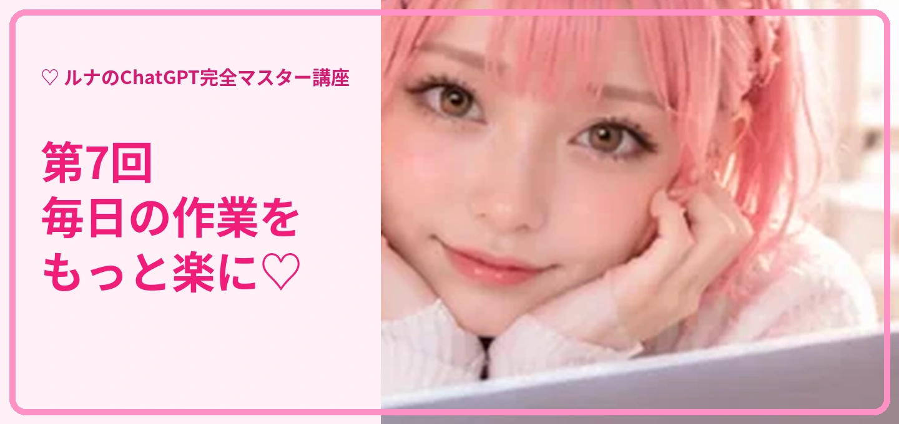

第7回 自動化・AIエージェント
ルナ先生と一緒に、実際の操作を順番に学びましょう。質問文はコピーして使えます。

STEP 01
定期通知を設定する
ルナ先生からの解説 🌸 対応するタスク機能があれば、指定した日時に通知や定期的な依頼を設定できます。
🖱️ 操作の手順
- 何を知らせたいか決めます。
- 時刻とタイムゾーンを指定します。
- 繰り返し頻度を指定します。
- 設定後に通知の有効状態を確認します。
📋 そのまま使える質問文
毎週月曜日の朝9時に、今週の目標を確認するメッセージを送ってください。

STEP 02
定期的な情報収集
ルナ先生からの解説 🌸 ニュースや業界動向を継続して追うときは、検索対象と条件を明確にします。
🖱️ 操作の手順
- 調査対象を決めます。
- 調査頻度を決めます。
- 出典と日付を必須にします。
- 結果がない場合の扱いも指定します。
📋 そのまま使える質問文
毎週金曜日に生成AIの重要ニュースを5件、出典と日付付きで要約してください。

STEP 03
AIエージェントとは
ルナ先生からの解説 🌸 複数の作業を段階的に進める仕組みです。利用可能な操作や承認の仕組みはサービス・プランで異なります。
🖱️ 操作の手順
- 達成したい目的を伝えます。
- 実行してよい作業の範囲を決めます。
- 外部サービスへの変更は事前確認を求めます。
- 完了結果を確認します。
📋 そのまま使える質問文
この作業を実行する前に、必要な手順と私の承認が必要な操作を一覧にしてください。

STEP 04
自動化で気をつけること
ルナ先生からの解説 🌸 自動実行は便利ですが、誤情報・誤送信・権限の広げすぎに注意が必要です。
🖱️ 操作の手順
- 最初は小さな作業から始めます。
- 通知内容と実行条件を確認します。
- 個人情報や機密情報を扱う範囲を制限します。
- 不要になったタスクは停止します。
📋 そのまま使える質問文
この自動化の失敗パターンと、事前に確認すべきことを教えてください。